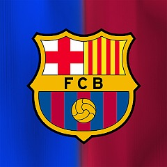
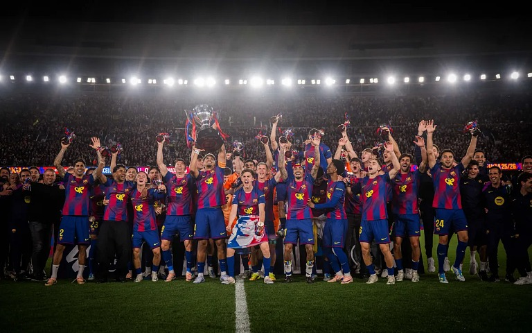

趣味について
最初に私はサッカー観戦が趣味だと言いましたが、よく観ているサッカーチームについて紹介します。

このクラブはスペインにあるラ・リーガというリーグで戦っているFCバルセロナというクラブです。
私はこのクラブが大好きです。めっちゃ好きです。
今シーズン(25/26)のクラブの戦績
今シーズンのバルセロナは国内二冠を達成しました。(La Liga,SuperCopaDeEspaña)
ラリーガは勝ち点で優勝が決まるリーグ戦ですが、どちらとも宿敵であるレアル・マドリードを下して優勝しました。

これでレアル・マドリードは2季連続の無冠となりました。面白いですね。
もうシーズンは終わってしまいますが、今年はワールドカップもあるのでまだまだ楽しめます。日本が勝ってほしい気持ちもありますが、バルセロナ所属の選手が活躍するところも見たいですね。